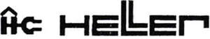

Trade Mark Journal No.2025/028 11 July 2025
UK00004192386 22 April 2025 (7,8,9,11)

- Class 7
- Blenders, electric, for household purpose; Cleaning (Machines and apparatus for —), electric; Coffee grinders, other than hand-operated; Dishwashers for household purposes; Fruit presses, electric, for household; Grinders, electric, for household purposes; crushers, electric, for household purposes; Kitchen machines electric; Kneading machines; Mixing machines; Mixers machines; Vacuum cleaners; Washing apparatus; Washing machines; Washing machines (Coin - operated); Washing machines [laundry]; Water heaters [parts of machines].
- Class 8
- Beard clippers; Blades [hand tools]; Cases (Razor-); Caulking irons; Crimping irons; Curlers (Eyelash-); curling tongs; Cuticle nippers; Cuticle tweezers; Depilation appliances, electric and non-electric; Eyelash curlers; Fingernail polishers, electric or non-electric; Flat irons [non-electric]; Glazing irons; Goffering irons; Hair clipper for personal use, electric and non-electric; Hair curling (Hand implements for-); Hair-removing tweezers; Irons [non-electric hand tools]; Iron flats; Manicure sets; Manicure sets, electric; Meat choppers [hand tools]; Nail buffers, electric or non-electric; Nail clippers, electric or non-electric; Nail files; Nail files, electric; Pedicure sets; Razors, electric or non-electric; Shear blades; Shaving cases; Tweezers.
- Class 9
- Flashing lights (luminous signals); Flash lights (photography); Fluorescent screens; Notice boards (Electronics); Television apparatus.
- Class 11
- Air conditioning installations; Air conditioning apparatus; Air cooling apparatus; Air filtering installations; Heaters for baths; Bread baking machines; Bread toasters; Gas burners; Burners; Ceiling lights; Coffee machines, electric; Coffee percolators, electric; Cookers; Cooking apparatus and installations; Driers (hair); Electric lamps; Fans [air-conditioning]; Electric fans for household purposes; Fans [parts of air conditioning installations]; Electric Torches; electric freezers for household purposes; Heating apparatus; Heating apparatus electric; Heating installations; Heating installations [water]; Heating plates; Ice machines and apparatus; Cool boxes, electric; Kettles, electric; Kitchen ranges, ovens; Lamps; Burners for lamps; Lamps (Electric); Light bulbs; Light bulbs, electric; Light bulbs for directional signals; Light-emitting diodes [LED] lighting apparatus; Light diffusers; Microwave ovens (cooking apparatus); Percolators (Coffee electric); Light Projectors; Refrigerating apparatus and machines; Refrigerating appliances and installations; Refrigerating display cabinets (display cases); Refrigerators; Stoves; Stoves ( heating apparatus); Street lamps; Toasters; Water heaters.
Elaraby Germany GmbH
Representative: Stevens Hewlett & Perkins